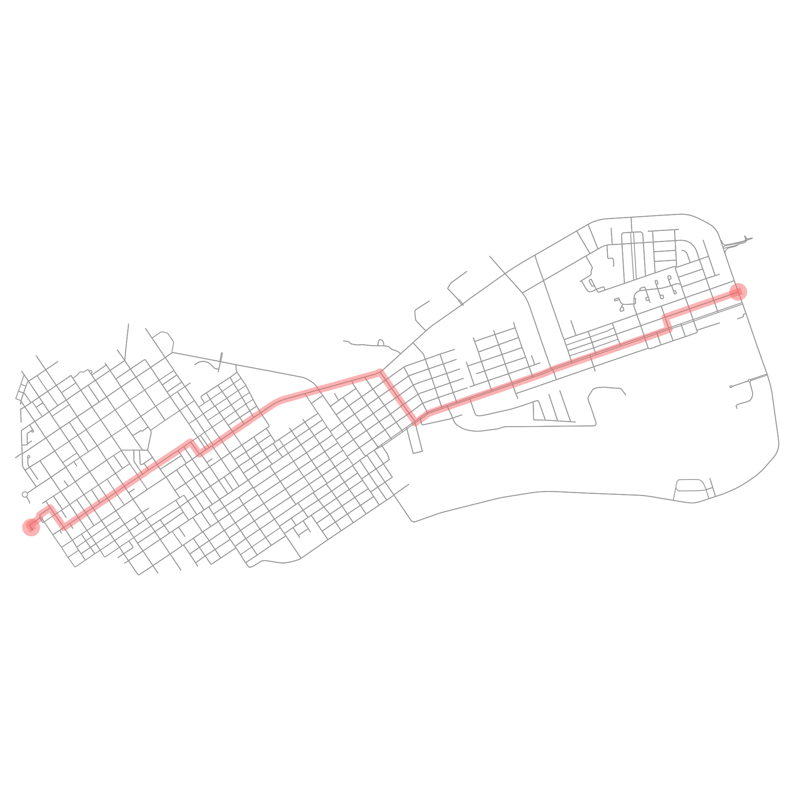

ROUTE POINTS
Source: (24.548847, -81.808354)
Destination: (24.566556, -81.75222)
Total Distance: 6623.5 meters
Route calculated in 0.011 seconds using Bellman-Ford

DIRECTIONS
Continue Northeast onto ['Geraldine Street', 'Fort Street'] for 136 meters
Slight right onto ['Geraldine Street', 'Fort Street']
Travel Northeast for 110 meters along ['Geraldine Street', 'Fort Street']
Turn right onto Emma Street
Travel Southeast for 187 meters along Emma Street
Turn left onto Olivia Street
Travel Northeast for 1195 meters along Olivia Street
Turn right onto Watson Street
Travel Southeast for 116 meters along Watson Street
Turn left onto Truman Avenue
Travel Northeast for 578 meters along Truman Avenue
Slight right onto North Roosevelt Boulevard
Travel Northeast for 992 meters along North Roosevelt Boulevard
Turn right onto 5th Street
Travel Southeast for 484 meters along 5th Street
Turn left onto Flagler Avenue
Travel Northeast for 2117 meters along Flagler Avenue
Turn right onto 18th Street
Travel Northwest for 100 meters along 18th Street
Turn left onto Eagle Avenue
Travel Northeast for 604 meters along Eagle Avenue